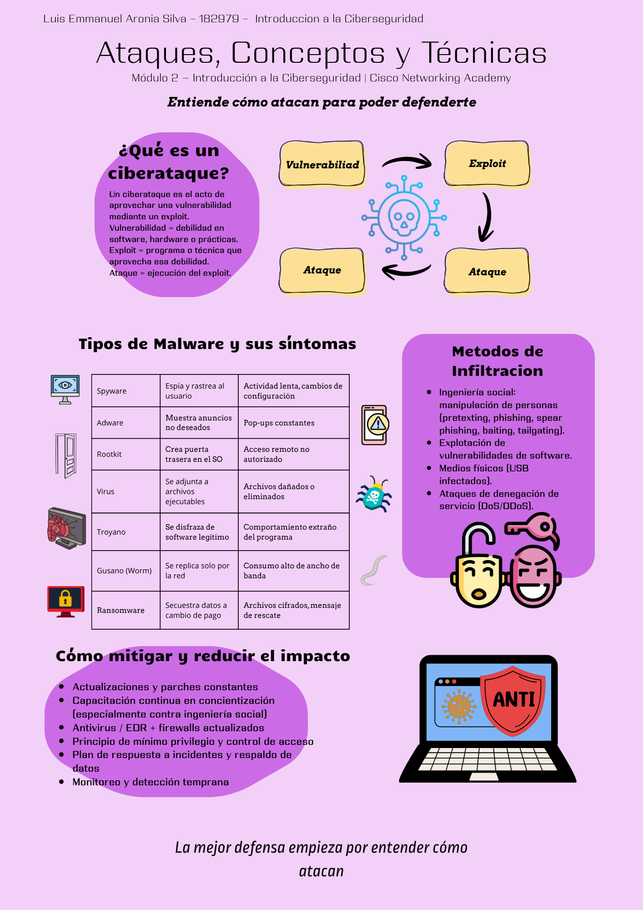

Infografía Completa
Descarga la infografía profesional en formato PDF (A4 vertical) sobre el Módulo 2: Ataques, conceptos y técnicas del curso Introducción a la Ciberseguridad de Cisco Networking Academy.
Descargar Infografía PDF 📄Objetivo de la Actividad
Diseñar una infografía profesional en formato vertical (A4) que explique de manera visual, sintética y estratégica el Módulo 2: Ataques, conceptos y técnicas del curso Introducción a la Ciberseguridad de Cisco Networking Academy. El producto debe demostrar comprensión técnica, capacidad de síntesis y comunicación efectiva orientada a la concientización organizacional.
Desarrollo
Se elaboró una infografía profesional que abarca de forma estructurada los principales subtemas del Módulo 2:
- Análisis de un ciberataque: definición de vulnerabilidad, exploit y ataque.
- Tipos de malware y síntomas: spyware, adware, ransomware, rootkit, virus, troyano, gusano y bot.
- Métodos de infiltración: ingeniería social (phishing, pretexting, baiting, etc.) y otras técnicas.
- Vulnerabilidades de seguridad: buffer overflow, entrada no validada, race conditions, debilidades en prácticas y control de acceso.
- Panorama de la ciberseguridad: ataques combinados (blended attacks) y la importancia de la reducción de impacto.
La infografía sigue un enfoque estratégico: qué es → por qué es relevante → qué riesgos implica → cómo se mitiga. Se utilizó un diseño limpio, jerarquía visual clara, iconografía profesional y una paleta de colores corporativa (azul institucional, rojo de alerta y verde de mitigación).
Evidencia Visual – Infografía
A continuación se muestra la infografía completa. Utiliza el scroll vertical del contenedor para visualizarla en su totalidad (formato A4 vertical).

↓ Desliza hacia abajo para ver la infografía completa ↓
Conclusiones
La elaboración de la infografía permitió sintetizar de forma clara y estratégica los conceptos fundamentales del Módulo 2 del curso de Cisco. Se evidenció la importancia de comprender no solo los tipos de malware y métodos de infiltración, sino también la relación entre vulnerabilidades, exploits y ataques combinados.
El formato visual y el enfoque de concientización organizacional facilitan la comunicación efectiva de riesgos y medidas de mitigación, aspectos clave en la formación de profesionales de ciberseguridad. Este tipo de productos refuerza tanto la comprensión técnica como la capacidad de divulgación.